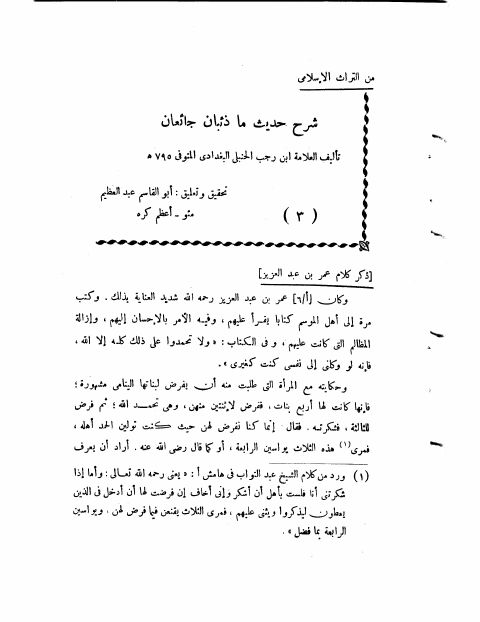

Downloads need an internet connection.
من التراث الإسلامي شرح حديث ما ذئبان جائعان
Authors: ابن رجب الحنبلي
Editors: أبو القاسم عبد العظيم
Publishers: مجلة الجامعة السلفية
**▫️ العنوان: من التراث الإسلامي شرح حديث ما ذئبان جائعان** ▪️ المؤلف: #عبد_الرحمن_البغدادي_بن_رجب_الحنبلي ▫️ المحقق: #أبو_القاسم_عبد_العظيم ▪️ الناشر: #مجلة_الجامعة_السلفية ▫️ تاريخ النشر: 1406هـ 1986م ▪️ بلد النشر: المدينة المنورة، #السعودية ▫️ الطبعة: 1 ▪️ عدد الأجزاء: 1 ▫️ الصفحات: 57 ▪️ نوع الوعاء: #بحث ▫️ التصنيف الرئيسي: #الحديث_وعلومه ▪️ التصنيف الفرعي: #شروحات ۪